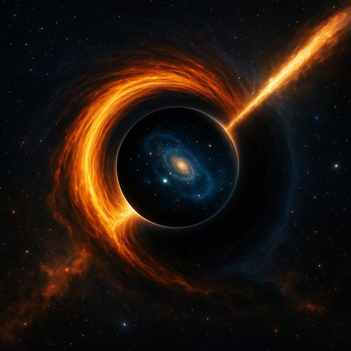

Publicado em 2025-06-09 23:03:38
Durante décadas, a cosmologia oficial construiu o seu edifício sobre conceitos misteriosos: matéria escura, energia escura, singularidades que desafiam a física conhecida. No entanto, um novo paradigma começa a ganhar forma — e para minha satisfação, encaixa-se com aquilo que tenho vindo a defender há anos: que os buracos negros são os verdadeiros pilares do universo.
Um estudo recente publicado na Physical Review D pelo físico Enrique Gaztanaga e colegas lança uma proposta ousada: o nosso universo pode ter surgido dentro de um buraco negro, como resultado de um colapso gravitacional num universo maior. Em vez de uma singularidade infinita, o colapso atinge uma densidade limite, dá um “quique” (bounce) e recomeça — desta vez como um novo universo em expansão.
Esta ideia, inspirada nos trabalhos de Penrose e Hawking mas corrigida com efeitos quânticos, aponta para um cosmos cíclico, dinâmico e profundamente estruturado. A chave está no princípio de exclusão de Pauli, que impede que partículas sejam comprimidas indefinidamente. Assim, o colapso trava e inverte — não com explosões mágicas, mas com física robusta.
Sempre defendi que os buracos negros não são apenas restos estelares, mas entidades primordiais, verdadeiros agentes estruturantes do cosmos. Que o que chamamos de “matéria escura” pode ser, afinal, efeitos gravitacionais de buracos negros invisíveis, primordiais ou não estelares. E que a energia escura pode ser o eco gravitacional da atividade negra do universo.
Agora, esta nova teoria dá um passo além: mostra que os próprios universos podem nascer dentro de buracos negros — completando o ciclo e ligando a estrutura, a origem e o destino cósmico numa só narrativa.
Se o universo onde habitamos é o interior de um buraco negro “pai”, então não estamos isolados — fazemos parte de um multiverso interligado, onde buracos negros funcionam como úteros cósmicos. Deixa de ser necessária a matéria escura, a energia escura ou campos inflacionários exóticos: o que vemos e medimos pode emergir diretamente da física gravitacional e quântica.
Mais do que uma teoria, esta é uma nova forma de ver o cosmos — não como um acidente inexplicável, mas como um ciclo natural e fecundo. E, talvez, um reconhecimento tardio de que a simplicidade elegante da gravidade extrema é mais esclarecedora do que as névoas das teorias escuras.
Artigo da autoria de Francisco Gonçalves
Estudioso de há muitos anos nesta senda de descoberta de pistas sobre as origens do nosso universo